This appendix is about drawing a graph so that the reader sees what is in the data: which visual encodings people read accurately, how to arrange a figure so that it supports the intended comparison, how to show magnitude and uncertainty without distortion, and which display answers which question. Appendix A covers what to look at during exploration (screening, missingness, co-variation, order and batch effects) and how far an exploratory finding can be trusted. This appendix covers how to draw it. The two meet in Section B.8.
How to read this appendix
Each section states a principle, shows a worse and a better version of the same data, and gives the reason in terms of what the reader’s eye and brain do. All figures are produced by the R code behind the “Show code” buttons.
Data. Figures use either standard R datasets (named in each caption) or simulated data, labelled “simulated”. Simulated numbers illustrate a point; they are not findings about anything. The book’s simulated cohort is not used here, because most points in this appendix concern perception and are clearer on data whose structure is familiar (a time series, a growth curve, a map of heights).
Evidence and convention. Claims about how people perceive graphs cite experiments. Advice that is a design convention with little or no experimental support is marked rule of thumb. Several popular rules, including some of Tufte’s, are less well supported than their reputation suggests; these places are marked in Evidence boxes.
Intervals. The intervals drawn here are classical 95% confidence intervals from t-based formulas, used as plotting devices. The display principles apply unchanged to posterior credible intervals (Chapter 10); the “inference by eye” rules in Section B.4.4 are specific to confidence intervals and p values.
Software. Rendered with R 4.6.0 and ggplot2 4.0.3, using ggplot2, dplyr, tidyr, patchwork, palmerpenguins, ggrepel, scales and viridisLite. Strip charts are drawn with horizontal jitter; the ggbeeswarm package arranges the same points without overlap and without randomness, and the hexbin package supplies hexagonal bins for Figure B.19.
B.1 A graph is a statistic
A statistic is a function of the data. So is a graph: it maps variables onto visual channels (position, length, angle, area, colour, shape) through a chosen geometry (points, lines, bars, tiles) after an optional statistical transformation (counting, binning, smoothing, averaging). This is the grammar of graphics,1 and ggplot2 is built on it:
Thinking of a graph as a statistic has two consequences.
Every graph is a data reduction, and every reduction discards something. A graph can show raw values, transformed values, summaries (means, proportions, quantiles) or model estimates. The further the display is from the raw data, the more assumptions it depends on, and the less the reader can check them.
Every graph makes some comparisons easy and others hard. The choice of channel and arrangement decides which comparison the reader will make. Designing a graph means deciding, before plotting, which comparison matters.
Show code
set.seed(11)d1 <-tibble(group =rep(c("Control", "Treatment"), each =12),y =c(rlnorm(12, 1.0, 0.5), rlnorm(11, 1.35, 0.5), 14))s1 <- d1 |>group_by(group) |>summarise(m =mean(y), se =sd(y) /sqrt(n()), .groups ="drop")tt <-t.test(y ~ group, data = d1) # Welch t-test, CI for Control - Treatment# tt$estimate = (mean Control, mean Treatment); tt$conf.int is for Control - Treatmentdiff1 <-tibble(est =unname(diff(tt$estimate)), lo =-tt$conf.int[2], hi =-tt$conf.int[1])p_a <-ggplot(d1, aes(group, y)) +geom_point(position =jit(0.12), size =1.6, colour = oi[5]) +labs(title ="(a) Raw data", x =NULL, y ="Response (units)")p_b <-ggplot(d1, aes(group, y)) +geom_boxplot(width =0.45, outlier.shape =1) +labs(title ="(b) Box plot", x =NULL, y =NULL)p_c <-ggplot(s1, aes(group, m)) +geom_col(width =0.55, fill ="grey60") +geom_errorbar(aes(ymin = m, ymax = m + se), width =0.15) +labs(title ="(c) Mean + SE bar", x =NULL, y =NULL)p_d <-ggplot(diff1, aes(x ="Treatment -\nControl", y = est)) +geom_hline(yintercept =0, linetype =2, colour ="grey50") +geom_pointrange(aes(ymin = lo, ymax = hi), colour = oi[5]) +labs(title ="(d) Difference, 95% CI", x =NULL, y ="Difference (units)")p_a + p_b + p_c + p_d +plot_layout(widths =c(1, 1, 1, 0.6))
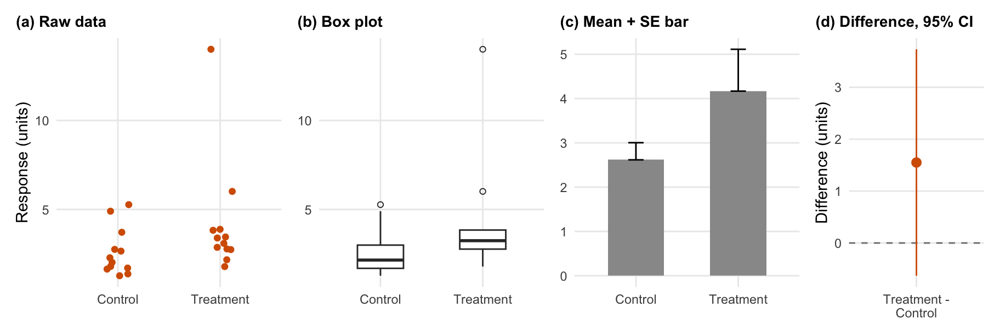
Figure B.1: The same simulated data (12 measurements per group, right-skewed, one large value in the treatment group) at four levels of reduction. Each step to the right discards information. (a) shows everything; (c), the familiar ‘dynamite plot’, hides the skew, the outlier and the sample size; (d) shows only what a reader needs to judge the size of the difference, and nothing about the data behind it.
Graphs serve two different purposes, and the same perceptual rules govern both:
Exploration (for the analyst). Many quick graphs, made to find out what is in the data, including problems with the study that generated it. The result is not known in advance. Appendix A is about this use.
Communication (for others). Few, finished graphs, made to support an argument whose conclusion is already known. Because the conclusion is known, it is easy to choose, deliberately or not, the view that favours it.
B.2 How people read graphs
Good design is applied perceptual psychology. Five findings account for most of it.
B.2.1 Some visual channels are decoded more accurately than others
Cleveland and McGill proposed a ranking of “elementary perceptual tasks” by how accurately people judge quantities encoded in them:2
Position along a common scale
Position along identical, non-aligned scales
Length, direction, angle
Area
Volume, curvature
Shading, colour saturation
Evidence
The ordering was proposed largely from psychophysical theory and only partly tested. Cleveland and McGill’s two experiments showed that position judgments were more accurate than length judgments (by about 1.4–2.5 times) and about twice as accurate as angle judgments (bars vs pies). Area was not tested in those experiments. A crowdsourced replication3 preserved position > length and found area worse than angle, but did not find angle worse than length. A defensible summary is position > length ≈ angle > area, with colour and shading at the bottom for judging amounts.
Show code
shares <-tibble(cat = LETTERS[1:5], pct =c(19, 22, 18, 21, 20))pie <-ggplot(shares, aes(x ="", y = pct, fill = cat)) +geom_col(width =1, colour ="white") +coord_polar(theta ="y") +scale_fill_manual(values = oi[1:5], name =NULL) +labs(title ="Worse: which slice is largest?") +theme_void() +theme(plot.title =element_text(face ="bold", size =10.5))bars <-ggplot(shares, aes(cat, pct)) +geom_col(width =0.6, fill ="grey45") +scale_y_continuous(expand =expansion(mult =c(0, 0.05))) +labs(title ="Better: common, aligned scale", x =NULL, y ="Share (%)")pie + bars
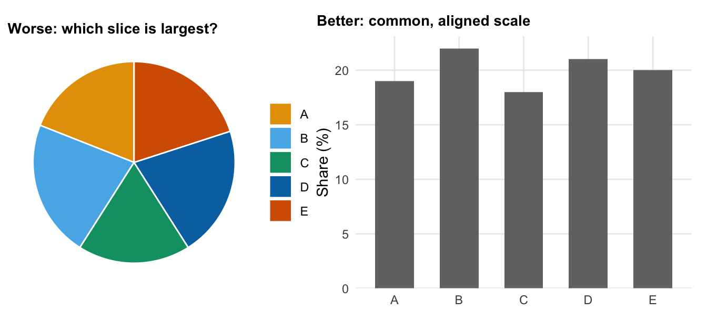
Figure B.2: Five simulated shares that sum to 100%. Try to rank the five slices of the pie from largest to smallest, then do the same with the bars. The bars put all five values on one common, aligned scale; the pie asks for a comparison of angles or areas that point in different directions.
B.2.2 Perceived size is not physical size
Two psychophysical laws matter for graphs.
Weber’s law. Whether a difference is detected depends on the difference relative to the magnitudes involved: 2.0 vs 2.5 cm is easy, 50.0 vs 50.5 cm is not. This is why a reference line or a grid line close to the values being compared helps: it turns a comparison of two long bars into a comparison of two short segments.4
Stevens’ power law. Perceived magnitude grows as a power of physical magnitude: perceived ∝ physicalβ.5 The exponent is close to 1 for length, smaller than 1 for area and smaller still for volume; it also varies between studies and between people (as reviewed by Cleveland and McGill6). An exponent below 1 means large areas look too small relative to small ones. If β for area were 0.7, a four-fold difference in area would be perceived as roughly 40.7 ≈ 2.6-fold.
The practical consequence: encode quantities that are to be compared precisely as positions or lengths, not as areas or volumes. Bubble charts, proportional symbols on maps and 3-D bars all invite misjudged effect sizes. Where area must be used, scale the area, not the radius, to the value (Figure B.3).
Show code
circle <-function(r, x0, n =200) { t <-seq(0, 2* pi, length.out = n)tibble(x = x0 + r *cos(t), y = r *sin(t))}vals <-c(1, 4)rad_r <- vals /max(vals) *1.0# radius proportional to valuerad_a <-sqrt(vals /max(vals)) *1.0# area proportional to valuemk_circ <-function(r) bind_rows(circle(r[1], 0) |>mutate(id ="1"),circle(r[2], 0.3+ r[1] + r[2]) |>mutate(id ="4"))pc <-function(df, ttl) ggplot(df, aes(x, y, group = id)) +geom_polygon(fill ="grey55") +coord_fixed() +labs(title = ttl) +theme_void() +theme(plot.title =element_text(face ="bold", size =10.5))p1 <-pc(mk_circ(rad_r), "(a) Worse: radius proportional to value")p2 <-pc(mk_circ(rad_a), "(b) Area proportional to value")p3 <-ggplot(tibble(v =factor(vals), h = vals), aes(v, h)) +geom_col(width =0.5, fill ="grey55") +scale_y_continuous(breaks =0:4, expand =expansion(mult =c(0, 0.05))) +labs(title ="(c) Better: length proportional to value", x ="Value", y =NULL)p1 + p2 + p3 +plot_layout(widths =c(1.2, 1, 0.8))
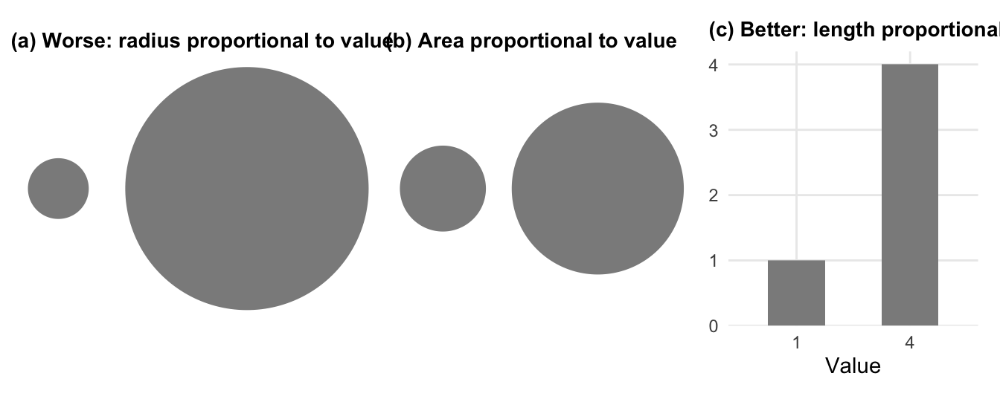
Figure B.3: Two values, 1 and 4. (a) Circles whose radius is proportional to the value: the area ratio is 16, so the picture exaggerates the effect four-fold (a Lie Factor of 4, defined in the section on the Lie Factor below). (b) Area proportional to the value: correct, but area is judged less accurately than length. (c) Bars: the length ratio is 4 and is easy to read.
B.2.3 The eye groups before the mind compares
Some features (colour, size, orientation, motion) are processed pre-attentively, in a fraction of a second and largely independently of how many other objects are present. A single red point among grey ones is found about as quickly among many points as among few, whereas the search time for a target defined by a combination of features grows with the number of objects; this is the visual-search result on which feature-integration theory was built.7 Gestalt principles describe how people group elements without trying:
Proximity: things close together belong together.
Similarity: things of the same colour or shape belong together.
Common region / enclosure: things inside the same boundary (a panel, a confidence band) belong together.
Connection: things joined by a line belong together, which is why a line between points implies continuity.
Combining two channels for the same grouping (colour and shape) makes groups easier to separate: Nothelfer and colleagues found a large benefit of such redundant encoding for segmenting and grouping data in dense displays.8 Redundant encoding also keeps the graph readable for people with colour-vision deficiency and in greyscale print.
B.2.4 Working memory is small; comparisons across panels are expensive
Visual working memory holds about four simple objects at a time; the number depends on the task and the objects.9 Two consequences:
A legend with eight colours forces the reader to move between legend and data, reloading memory each time. Label directly where possible.
Comparing across separate panels requires remembering one panel while looking at another, and details are lost in the switch (change blindness). The most important comparison should be made within a panel, between adjacent elements.
B.2.5 Colour: good for categories, poor for amounts
Colour has three dimensions: hue (red vs blue), saturation (vivid vs greyish) and lightness (dark vs light).
Hue labels categories well, up to about 6–8 distinguishable hues (rule of thumb). Hue has no natural order, so it does not encode amount.
Lightness encodes order and amount. For a quantitative colour scale, use a sequential palette whose lightness changes monotonically (e.g. viridis); for values with a meaningful centre (zero change, log fold change 0), use a diverging palette with a light neutral midpoint.
Avoid rainbow (“jet”) scales. Their lightness rises and falls along the scale, which creates sharp apparent boundaries where the data change smoothly and hides real structure elsewhere.10 Perceptually uniform maps such as viridis and cividis were designed to avoid this, the latter also for colour-vision deficiency.11
Design for colour-vision deficiency. Red–green deficiency affects about 8% of men and about 0.4% of women of European descent.12 If a manuscript goes to three male reviewers of that background, the probability that at least one has it is 1 − 0.923 ≈ 22%. Avoid red–green contrasts; vary lightness as well as hue; use a tested palette (the figures here use the Okabe–Ito palette built into R: palette.colors(palette = "Okabe-Ito")).
Show code
vol <-expand.grid(x =seq_len(nrow(volcano)), y =seq_len(ncol(volcano)))vol$h <-as.vector(volcano)n_col <-256pal_rb <-rev(rainbow(n_col, end =0.7)) # blue -> red "jet-like"pal_vi <- viridisLite::viridis(n_col)lstar <-function(cols) grDevices::convertColor(t(col2rgb(cols)) /255,from ="sRGB", to ="Lab")[, "L"]lab_df <-bind_rows(tibble(pos =seq(0, 1, length.out = n_col), L =lstar(pal_rb), scale ="Rainbow"),tibble(pos =seq(0, 1, length.out = n_col), L =lstar(pal_vi), scale ="Viridis"))pv <-function(pal, ttl) ggplot(vol, aes(x, y, fill = h)) +geom_raster() +scale_fill_gradientn(colours = pal, name ="Height (m)") +coord_fixed() +labs(title = ttl, x =NULL, y =NULL) +theme(axis.text =element_blank(), panel.grid =element_blank())pl <-function(s) ggplot(filter(lab_df, scale == s), aes(pos, L)) +geom_line(linewidth =1) +ylim(0, 100) +labs(x ="Position along colour scale (low to high)", y ="Lightness L*")(pv(pal_rb, "Worse: rainbow") |pv(pal_vi, "Better: viridis")) / (pl("Rainbow") |pl("Viridis")) +plot_layout(heights =c(2, 1))
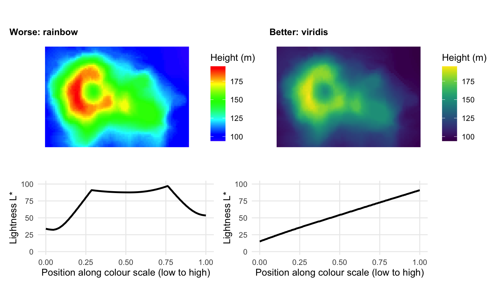
Figure B.4: Height of the Maunga Whau volcano (R dataset volcano). Top: rainbow vs viridis colour scales. Bottom: the perceived lightness (CIE L*) of each colour scale along the data range. In the rainbow the lightness rises and falls, so the eye sees bands (e.g. the bright yellow-cyan ring) that are not in the data; in viridis lightness increases steadily, so lighter always means higher.
B.3 Making readers compare the right things
The most useful question when designing a graph is: which comparison should the reader make? Once that is decided, five principles follow.
B.3.1 Put the compared elements next to each other, on a common scale
Comparisons are most accurate along a common, aligned scale and between adjacent elements. In a grouped display, the comparison within the innermost grouping is the one readers are most likely to make, because those elements are adjacent; comparisons across groups or panels are harder. (This follows from proximity and working-memory limits rather than from a dedicated experiment.) There are three basic ways to support a comparison:13juxtaposition (side by side), superposition (overlaid in the same frame) and explicit encoding (computing the comparison, e.g. a difference, and plotting that).
Show code
pm <- pens |>group_by(species, sex) |>summarise(m =mean(flipper_length_mm), s =sd(flipper_length_mm), n =n(),.groups ="drop") |>mutate(lo = m -qt(0.975, n -1) * s /sqrt(n),hi = m +qt(0.975, n -1) * s /sqrt(n))dodge <-position_dodge(width =0.45)pA <-ggplot(pm, aes(species, m, colour = sex, shape = sex)) +geom_pointrange(aes(ymin = lo, ymax = hi), position = dodge) +scale_colour_manual(values = oi[c(5, 4)], name =NULL) +scale_shape_manual(values =c(16, 17), name =NULL) +labs(title ="Sexes adjacent: compares sexes", x =NULL,y ="Flipper length (mm)") +theme(legend.position ="top")pB <-ggplot(pm, aes(sex, m, colour = species, shape = species)) +geom_pointrange(aes(ymin = lo, ymax = hi), position = dodge) +scale_colour_manual(values = oi[1:3], name =NULL) +scale_shape_manual(values =c(16, 17, 15), name =NULL) +labs(title ="Species adjacent: compares species", x =NULL, y =NULL) +theme(legend.position ="top")pA + pB
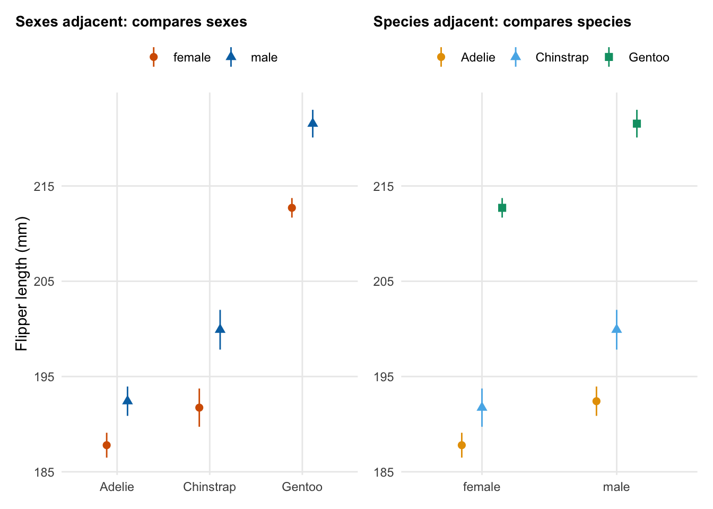
Figure B.5: Mean flipper length (with 95% CI) by species and sex (R package palmerpenguins). The numbers are identical in both panels; only the arrangement differs. Left: the two sexes are adjacent, so the eye compares sexes within each species. Right: the three species are adjacent, so the eye compares species within each sex.
B.3.2 If the message is a difference, plot the difference
People judge the vertical distance between two curves poorly. Cleveland and McGill used Playfair’s eighteenth-century chart of English imports and exports to show this, and concluded that a difference that is to be conveyed should also be plotted on its own graph.14 They did not test this experimentally; Figure B.6 allows readers to test it on themselves.
Show code
x <-seq(0, 10, by =0.05)base <-5*exp(0.4* x)gap <-12+30*exp(-((x -8) /0.8)^2)cv <-bind_rows(tibble(x, y = base, series ="A"),tibble(x, y = base + gap, series ="B"))pc1 <-ggplot(cv, aes(x, y, colour = series)) +geom_line(linewidth =0.9) +annotate("text", x =c(9.4, 6.0), y =c(140, 120), label =c("A", "B"),colour = oi[c(5, 4)], fontface ="bold") +scale_colour_manual(values = oi[c(5, 4)], guide ="none") +labs(title ="Worse: two curves, difference left to the eye", y ="Value")pc2 <-ggplot(tibble(x, gap), aes(x, gap)) +geom_line(linewidth =0.9) +scale_y_continuous(limits =c(0, NA)) +labs(title ="Better: plot the difference B - A", y ="Difference")pc1 + pc2
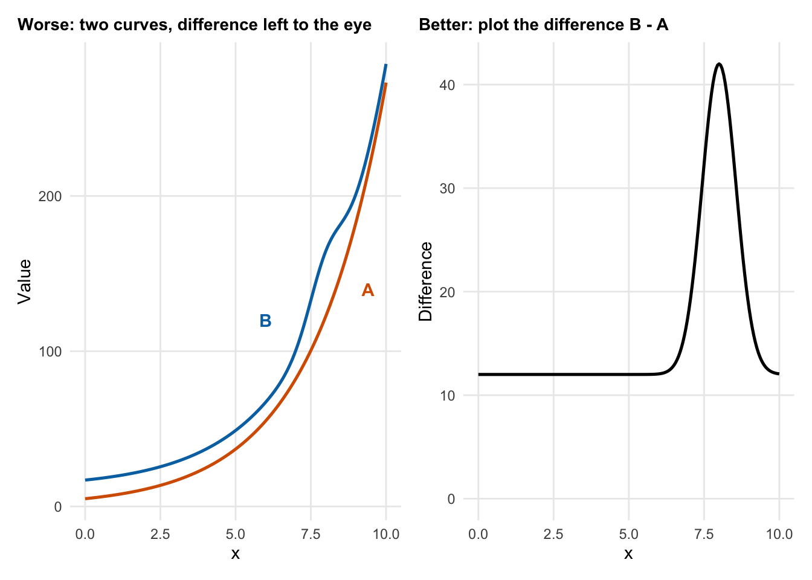
Figure B.6: Simulated data. Left: two rising curves. Right: their vertical difference. The gap is 12 units both at x = 0 and at x = 10, yet on the left the curves seem to converge towards the right-hand side, and the size of the peak in the difference near x = 8 is hard to judge. A likely explanation is that the eye judges the shortest distance between the curves, which shrinks as they get steeper, rather than the vertical distance.
The same logic applies to paired or repeated measurements. When each subject is measured twice, the comparison of interest is the within-subject change, and plotting the two time points as if they were independent groups hides it under between-subject variation.
Show code
set.seed(4)n_p <-15pre <-rnorm(n_p, 50, 10)post <- pre +rnorm(n_p, 2.5, 2)pd <-tibble(id =factor(rep(1:n_p, 2)), time =factor(rep(c("Before", "After"), each = n_p),levels =c("Before", "After")), y =c(pre, post))dd <-tibble(d = post - pre)ci_p <-t.test(post, pre, paired =TRUE)$conf.intci_u <-t.test(post, pre)$conf.intpp1 <-ggplot(pd, aes(time, y)) +geom_boxplot(width =0.45, outlier.shape =NA, colour ="grey50") +geom_point(position =jit(0.1), size =1.4) +labs(title ="(a) Worse: pairing ignored", x =NULL, y ="Response")pp2 <-ggplot(pd, aes(time, y, group = id)) +geom_line(colour ="grey55") +geom_point(size =1.4) +labs(title ="(b) Better: slopegraph", x =NULL, y =NULL)pp3 <-ggplot(dd, aes(x ="After - Before", y = d)) +geom_hline(yintercept =0, linetype =2, colour ="grey50") +geom_point(position =jit(0.08), size =1.4, colour ="grey55") +geom_pointrange(data =tibble(m =mean(dd$d), lo = ci_p[1], hi = ci_p[2]),aes(y = m, ymin = lo, ymax = hi), colour = oi[5], size =0.6,position =position_nudge(x =0.25)) +labs(title ="(c) Better: differences", x =NULL, y ="Change")pp1 + pp2 + pp3 +plot_layout(widths =c(1, 1, 0.7))
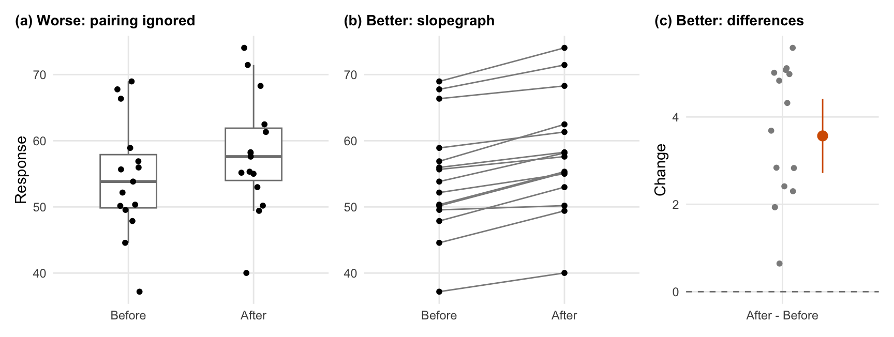
Figure B.7: Simulated paired data: 15 subjects measured before and after a treatment. (a) Treating the two time points as independent groups: the change looks small next to the large differences between subjects. (b) A slopegraph connects each subject’s two values; almost all lines rise. (c) The within-subject differences with their mean and 95% CI: the quantity the analysis is about.
In these simulated data, the 95% CI for the mean change is 2.7 to 4.4 units if the pairing is used, and -3.0 to 10.1 if it is ignored. The graph and the analysis should follow the same design.
B.3.3 Order categories by something meaningful
Alphabetical order is rarely the order that helps. Sort categories by the value plotted (or by a natural order: time, dose, a factor’s levels), and use horizontal layouts when labels are long, so that they can be read without rotation.
Show code
st <-tibble(state =rownames(state.x77), murder = state.x77[, "Murder"])po1 <-ggplot(st, aes(state, murder)) +geom_col(fill ="grey55", width =0.7) +scale_y_continuous(expand =expansion(mult =c(0, 0.05))) +labs(title ="Worse: alphabetical", x =NULL, y ="Murders per 100,000") +theme(axis.text.x =element_text(angle =90, hjust =1, vjust =0.5, size =7),panel.grid.major.x =element_blank())po2 <-ggplot(st, aes(murder, reorder(state, murder))) +geom_point(size =1.6) +labs(title ="Better: sorted dot plot", x ="Murders per 100,000", y =NULL) +theme(axis.text.y =element_text(size =7),panel.grid.major.y =element_line(linetype =3, colour ="grey80"))po1 + po2 +plot_layout(widths =c(1.3, 1))
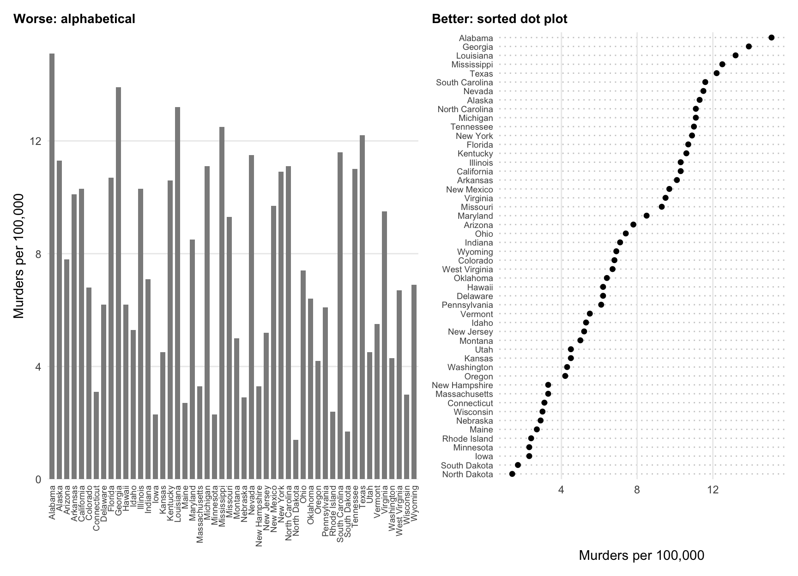
Figure B.8: Murder rate per 100,000 population by US state, 1976 (R dataset state.x77). Left: alphabetical bars with rotated labels; finding the highest, the lowest or a given rank is laborious. Right: a sorted Cleveland dot plot; the distribution, the extremes and every state’s rank can be read at once.
The dot plot does more than use less ink than the bars. Because it encodes value as position rather than bar length, it does not need a zero baseline, so its axis can be chosen to fit the data (Section B.4.1).
B.3.4 Use the same scales when panels are to be compared
Small multiples (many small panels of the same design) are one of the most useful tools for complex data, but only if the panels share their axes. With “free” scales, each panel is stretched to fill its box, and very different magnitudes look alike. Readers rarely check the tick labels.
Show code
set.seed(3)ts <-tibble(site =c("A", "B", "C", "D"), base =c(20, 40, 80, 800),trend =c(-0.05, 0, 0, 0.03)) |>crossing(year =2005:2024) |>mutate(count =rpois(n(), base *exp(trend * (year -2005))))fs <-function(scales, ttl, logy =FALSE) { p <-ggplot(ts, aes(year, count)) +geom_line(colour ="grey40") +geom_point(size =0.8) +facet_wrap(~ site, nrow =1, scales = scales,labeller =labeller(site =function(s) paste("Site", s))) +labs(title = ttl, x =NULL, y ="Count") +scale_x_continuous(breaks =c(2005, 2015)) +theme(panel.spacing.x =unit(1.2, "lines"))if (logy) p <- p +scale_y_log10() p}fs("free_y", "Worse: free scales hide magnitudes") /fs("fixed", "Better for magnitudes: common linear scale") /fs("fixed", "Better for relative change: common log scale", logy =TRUE)
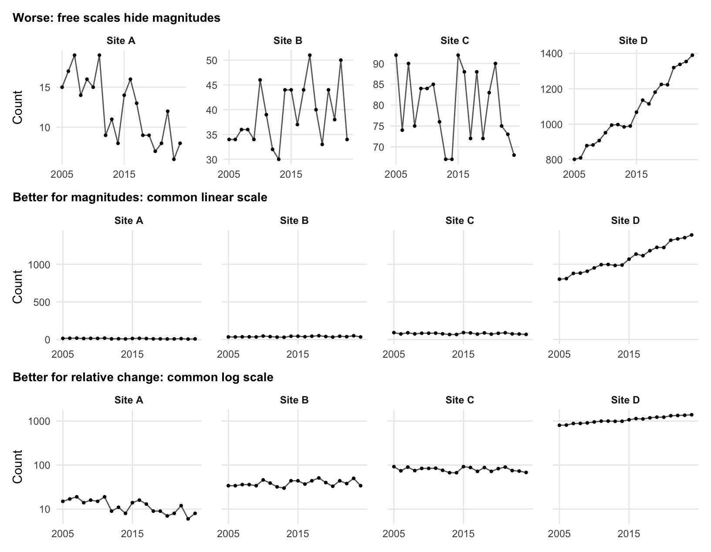
Figure B.9: Simulated annual counts at four sites whose typical levels differ forty-fold (20, 40, 80 and 800). Top: free y-scales make all sites look alike in size and variability. Middle: a common linear scale shows the true magnitudes but flattens the three small sites. Bottom: a common log scale shows both magnitudes and relative (percentage) trends: site A declines, site D increases.
When free scales are used deliberately (because only the shape within each panel matters), the caption should say so.
B.3.5 Group with colour and shape, but not too many groups
Colour is pre-attentive and well suited to grouping. It stops working beyond about 6–8 categories (rule of thumb), and every legend entry costs working memory. When there are many groups, use small multiples, highlight the few that matter and draw the rest in grey, or label lines directly. Make visual salience match relevance: the most conspicuous element should be the most important one.
Figure B.10: Growth of 50 chicks on four diets (R dataset ChickWeight). Top: one colour per chick; the legend cannot be used and no comparison is possible. Bottom: one panel per diet, individual chicks in light grey (showing variation), the median per diet highlighted (showing the comparison of interest).
B.4 Seeing magnitudes and effect sizes correctly
A graph of an experiment is usually read as an answer to the question of how large the effect is. Four design choices decide whether the reader’s answer is correct: the baseline, the scale, the aspect ratio, and the way variation and uncertainty are shown.
Lie Factor = (size of effect shown in the graphic) / (size of effect in the data)
and asked that it stay close to 1. The most common way to break this is the truncated bar chart. A bar encodes its value by its length, so a bar that does not start at zero misrepresents the value. Points and lines encode value by position, so for dot plots and line graphs the axis need not include zero; choose a range that shows the variation that matters, and label the axis so that its range is evident.
Show code
set.seed(5)dtr <-tibble(group =rep(c("Control", "Treatment"), each =30),y =c(rnorm(30, 102, 5), rnorm(30, 104, 5)))str_ <- dtr |>group_by(group) |>summarise(m =mean(y), se =sd(y) /sqrt(n()), n =n(), .groups ="drop") |>mutate(lo = m -qt(0.975, n -1) * se, hi = m +qt(0.975, n -1) * se)baseline <-floor(min(str_$m)) -0.5shown <- (str_$m[2] - baseline) / (str_$m[1] - baseline) -1actual <- str_$m[2] / str_$m[1] -1lie <- shown / actualpt1 <-ggplot(str_, aes(group, m)) +geom_col(width =0.55, fill ="grey55") +coord_cartesian(ylim =c(baseline, max(str_$m) +0.3)) +scale_y_continuous(expand =c(0, 0)) +labs(title ="Worse: truncated bars", x =NULL, y ="Mean response")pt2 <-ggplot(dtr, aes(group, y)) +geom_point(position =jit(0.12), size =1.2, colour ="grey60") +geom_pointrange(data = str_, aes(y = m, ymin = lo, ymax = hi),colour = oi[5], position =position_nudge(x =0.3)) +labs(title ="Better: data, means and 95% CIs", x =NULL, y ="Response")pt1 + pt2
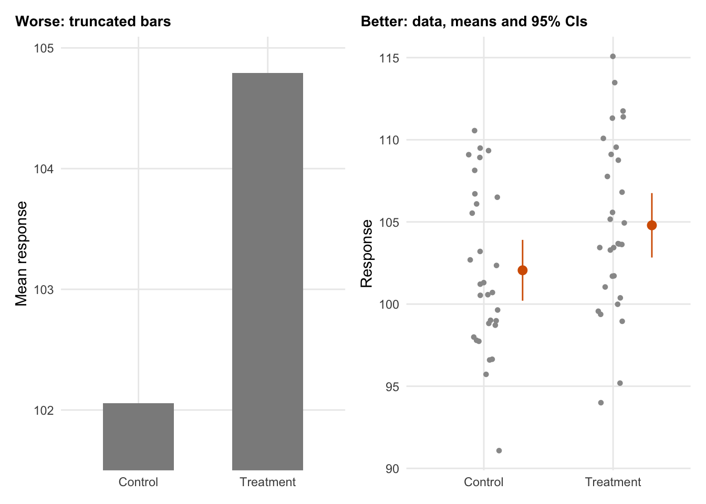
Figure B.11: Simulated data, 30 subjects per group. Left: bars with the axis starting just below the smaller mean; the bars’ lengths imply a several-fold effect. Right: the data, the group means and their 95% CIs; the axis does not start at zero, which is acceptable for position encodings, and the raw data show how small the difference is relative to the spread.
In Figure B.11, the treatment mean is 2.7% higher than the control mean, but the right-hand bar is 492% longer than the left-hand one: a Lie Factor of about 183. The effect of truncation on readers is not small. In crowdsourced experiments that measured how large readers judged a difference to be (a rating, not an accuracy score), truncated axes increased the judged effect size across chart types, and the increase persisted in designs that carried explicit visual signs of truncation.16
Related distortions with large Lie Factors: scaling symbols by radius instead of area (Figure B.3), 3-D perspective (near objects look larger), and hidden scale breaks.
B.4.2 Choose the scale that matches the process: log scales
Many biological quantities are multiplicative: growth, concentrations, gene expression, fold changes, incomes. For these, a log scale often matches the process that generated the data:
Equal ratios are equal distances. A doubling looks the same whether it is from 1 to 2 or from 1000 to 2000.
Up- and down-regulation become symmetric: a 2-fold increase and a 2-fold decrease are equally far from 1 (log2 fold change +1 and −1), whereas on a linear axis the decrease is compressed between 0.5 and 1.
Exponential growth becomes a straight line whose slope is the growth rate.
Long right tails are spread out, so the bulk of the data is no longer compressed against zero.
Changing the base of the logarithm does not change the shape of the graph, only the tick labels. Label ticks in the original units (1, 10, 100 or 1, 2, 4, 8), not in logs, and say in the axis title that the scale is logarithmic. For log-normal data, the matching summaries are the geometric mean and the multiplicative SD (Section A.7.1).
Show code
set.seed(9)tg <-seq(0, 10, by =0.5)gr <-bind_rows(tibble(strain ="A", t = tg, N =1e3*2^(tg /1.0)),tibble(strain ="B", t = tg, N =1e4*2^(tg /1.7))) |>mutate(N = N *exp(rnorm(n(), 0, 0.08)))pg <-ggplot(gr, aes(t, N, colour = strain, shape = strain)) +geom_line() +geom_point(size =1.5) +scale_colour_manual(values = oi[c(5, 4)], name ="Strain") +scale_shape_manual(values =c(16, 17), name ="Strain") +labs(x ="Time (h)")(pg +scale_y_continuous(labels = scales::label_comma()) +labs(title ="Worse: linear scale", y ="Cells per ml")) + (pg +scale_y_log10(labels = scales::label_log()) +labs(title ="Better: log scale", y ="Cells per ml (log scale)")) +plot_layout(guides ="collect")
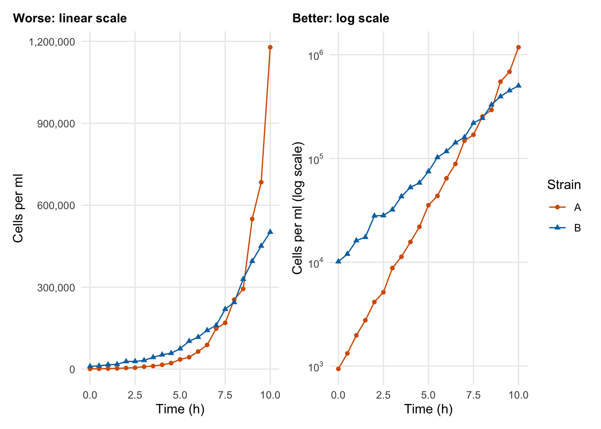
Figure B.12: Simulated growth of two bacterial strains. Strain A starts ten times lower but doubles every hour; strain B doubles every 1.7 hours. Left: on a linear scale, nothing is visible for the first six hours and the growth rates cannot be compared. Right: on a log scale, each strain is a straight line whose slope is its growth rate; A grows faster and overtakes B after about 8 hours.
A log scale changes the question the graph answers: it shows relative differences. If absolute differences matter (e.g. the number of extra deaths), a linear scale may be the right one. The choice should be deliberate rather than a default.
B.4.3 Aspect ratio controls perceived slopes
The same line looks flat in a wide panel and steep in a tall one. Cleveland and colleagues proposed banking to 45°: choose the aspect ratio so that the typical line segment is at about 45°, where differences between slopes were thought to be judged best.17 It is a useful heuristic rather than a law: later experiments found that slope comparisons are not, in general, most accurate at 45°.18 The practical lesson stands: if slopes or shapes matter, try several aspect ratios, because one of them may show what the others hide.
Show code
sp <-tibble(year = xs, n = ys) |>mutate(period =cut(year, breaks =c(1699, 1795, 1891, 1988),labels =c("1700-1795", "1796-1891", "1892-1988")))pa1 <-ggplot(sp, aes(year, n)) +geom_line(linewidth =0.4) +labs(title ="Worse for shape: conventional aspect ratio", x =NULL, y ="Sunspots") +theme(aspect.ratio =0.35)pa2 <-ggplot(sp, aes(year, n)) +geom_line(linewidth =0.4) +facet_wrap(~ period, ncol =1, scales ="free_x") +labs(title ="Better for shape: banked to 45 degrees (cut into three panels)",x =NULL, y ="Sunspots") +theme(aspect.ratio = asp_bank, strip.text =element_text(hjust =0))pa1 / pa2 +plot_layout(heights =c(1, 1.5))
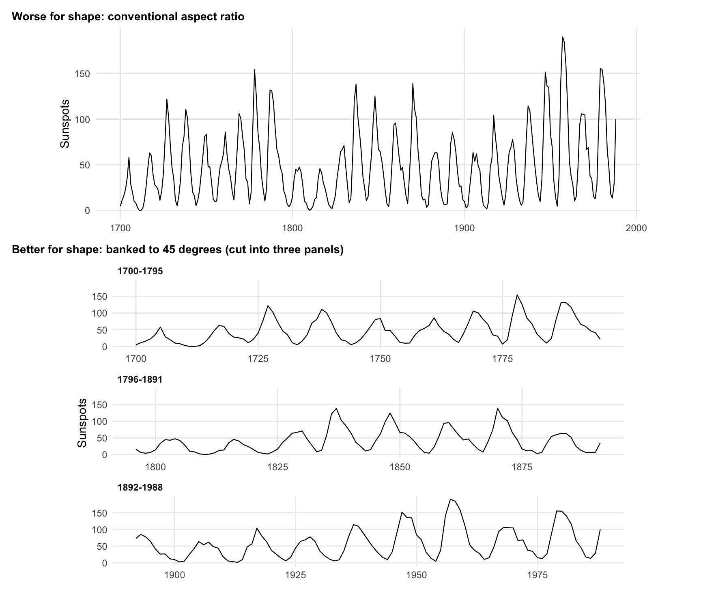
Figure B.13: Yearly sunspot numbers, 1700-1988 (R dataset sunspot.year). Top: a conventional aspect ratio; the cycles look like symmetric spikes. Bottom: the same series cut into three periods, each panel banked so that the median segment is at 45 degrees. Now it is visible that sunspot numbers usually rise faster than they fall.
The asymmetry is easy to see only in the banked version, and it can be checked numerically: across the 26 complete cycles in the series, the rise from minimum to maximum took on average 4.4 years and the fall 6.6 years; the rise was shorter in 21 of the 26 cycles. (Cycle boundaries were found as local extrema within ±4 years, a crude rule.)
B.4.4 Show variation, not only means, and label the error bars
Effect sizes are judged against variation. A graph of means with small error bars invites the reader to think the groups are cleanly separated, even when individuals overlap almost completely.
Show code
set.seed(8)n_e <-1000de <-tibble(group =rep(c("Control", "Treatment"), each = n_e),y =c(rnorm(n_e, 100, 15), rnorm(n_e, 103, 15)))se_ <- de |>group_by(group) |>summarise(m =mean(y), s =sd(y), n =n(), .groups ="drop") |>mutate(lo = m -qt(0.975, n -1) * s /sqrt(n), hi = m +qt(0.975, n -1) * s /sqrt(n))te <-t.test(y ~ group, data = de)d_est <-unname(diff(te$estimate)); d_ci <--rev(te$conf.int)cohen_d <- d_est /sqrt(mean(se_$s^2))yT <- de$y[de$group =="Treatment"]; yC <- de$y[de$group =="Control"]p_sup <-mean(outer(yT, yC, ">")) # P(random treated > random control)pe1 <-ggplot(se_, aes(group, m)) +geom_pointrange(aes(ymin = lo, ymax = hi), colour = oi[5]) +labs(title ="(a) Means, 95% CIs", x =NULL, y ="Response")pe2 <-ggplot(de, aes(group, y)) +geom_point(position =jit(0.3), size =0.25, alpha =0.35) +geom_pointrange(data = se_, aes(y = m, ymin = lo, ymax = hi), colour = oi[5]) +labs(title ="(b) Same data, all subjects", x =NULL, y =NULL)pe3 <-ggplot(tibble(x ="Treatment -\nControl", est = d_est, lo = d_ci[1], hi = d_ci[2]),aes(x, est)) +geom_hline(yintercept =0, linetype =2, colour ="grey50") +geom_pointrange(aes(ymin = lo, ymax = hi), colour = oi[5]) +labs(title ="(c) The difference", x =NULL, y ="Difference (units)")pe1 + pe2 + pe3 +plot_layout(widths =c(1, 1.2, 0.6))
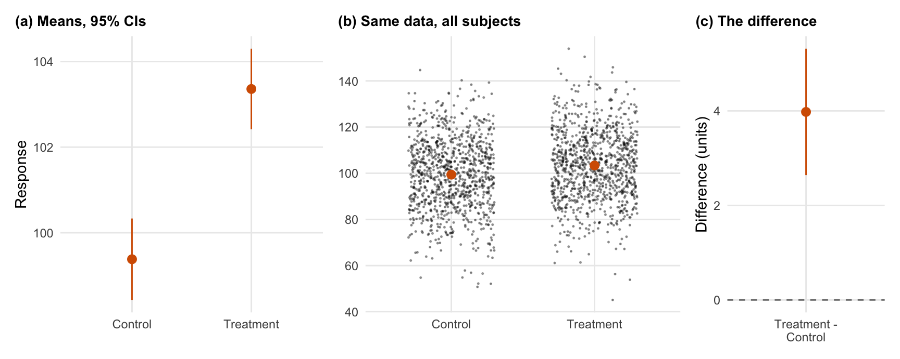
Figure B.14: Simulated data: 1000 subjects per group, true difference 3 units with SD 15 (0.2 SD). (a) Means with 95% CIs on an automatically zoomed axis: the groups look clearly separated. (b) The same data with every subject shown: the distributions overlap almost completely. (c) An estimation plot of the difference and its 95% CI, on its own axis.
In these simulated data the estimated difference is 4.0 units (95% CI 2.6 to 5.3), a standardised difference of d ≈ 0.26. A randomly chosen treated subject has a higher value than a randomly chosen control in only 57% of pairs (50% would mean no difference). Panel (a) is not wrong, but on its own it gives a different impression from (b).
Evidence
Bar charts of means hide the data. In a review of 703 articles in leading physiology journals, 85.6% contained at least one bar graph, most often showing mean ± SE; many different distributions produce the same bar graph.19
Bars bias reading. Viewers judge points inside a bar as more likely than equally distant points above it, the “within-the-bar bias”;20 error bars on bars show the same bias, while gradient and violin plots did not in one crowdsourced study.21
Researchers misread error bars. When asked to adjust two error bars until the difference was “just significant”, many published researchers set them badly and confused SE bars with CIs.22
CIs alone can inflate perceived effects. Lay participants shown 95% CIs (inferential uncertainty) were willing to pay more for a treatment and overestimated its effect, compared with participants shown 95% prediction intervals, which display the spread of individual outcomes.23 Whether experts are affected in the same way is open.
What to do:
Show the raw data whenever n is small enough (Weissgerber and colleagues recommend univariate scatterplots for small samples), with summaries on top of them.
Say what the error bars are (SD, SE or 95% CI) in every caption. They answer different questions: the SD describes the spread of individuals; the SE and the CI describe the precision of the mean (Section A.9).
Know the “inference by eye” rules, and their limits.24 For two independent means with 95% CIs, p < 0.05 when the CIs overlap by no more than about half the average arm length, and p < 0.01 when they do not overlap at all. For SE bars, p < 0.05 when the gap between the bars is at least about one average SE. These hold only if both n ≥ 10 and the two arms differ in length by less than a factor of 2, and never for paired data.
When the effect is the point, plot the effect: the difference (or ratio) with its interval, as in Figure B.14 (c). Such “estimation graphics” put the magnitude and its uncertainty on the same axis.25 The book’s effects are contrasts of this kind (Chapter 29).
Figure B.15: One simulated data set (10 subjects per group) with three kinds of error bar. The bars differ in width by a factor of more than 3, so an unlabelled error bar cannot be interpreted. The SD shows the spread of individuals; the SE and the 95% CI show the precision of each mean.
B.4.5 Avoid dual y-axes
A graph with two y-axes lets the designer choose, independently, where each series is placed and how steep it looks. Any crossing point and any apparent difference in slope is a consequence of that choice. Use two aligned panels, or index both series to a common baseline. The exception is a second axis that is a fixed transformation of the first (degrees Celsius and Fahrenheit, or a count and the corresponding rate in a fixed population): it adds a second set of tick labels for the same series and gives the designer no freedom.
Show code
set.seed(12)yrs <-2010:2024A <-100+1.5* (yrs -2010) +rnorm(length(yrs), 0, 1)B <-0.50+0.012* (yrs -2010) +rnorm(length(yrs), 0, 0.006)dual <-function(lim, a0, k, b0, ttl) {ggplot(tibble(yrs, A, B), aes(yrs)) +geom_line(aes(y = A), colour = oi[5], linewidth =1) +geom_line(aes(y = (B - b0) * k + a0), colour = oi[4], linewidth =1, linetype =2) +scale_y_continuous(name ="A", limits = lim,sec.axis =sec_axis(~ (. - a0) / k + b0, name ="B")) +labs(title = ttl, x =NULL) +theme(axis.title.y.left =element_text(colour = oi[5]),axis.title.y.right =element_text(colour = oi[4]))}pd1 <-dual(c(95, 125), a0 =95, k =15, b0 =0, "(a) Worse: 'A grows, B flat'")pd2 <-dual(c(0, 250), a0 =0, k =1000, b0 =0.45, "(b) Worse: 'B grows, A flat'")idx <-tibble(yrs, A =100* A / A[1], B =100* B / B[1]) |>pivot_longer(-yrs, names_to ="series")pd3 <-ggplot(idx, aes(yrs, value, colour = series, linetype = series)) +geom_line(linewidth =1) +scale_colour_manual(values = oi[c(5, 4)], name =NULL) +scale_linetype_manual(values =c(1, 2), name =NULL) +labs(title ="(c) Better: both indexed to 2010 = 100", x =NULL, y ="Index") +theme(legend.position ="inside", legend.position.inside =c(0.2, 0.85))pd1 + pd2 + pd3
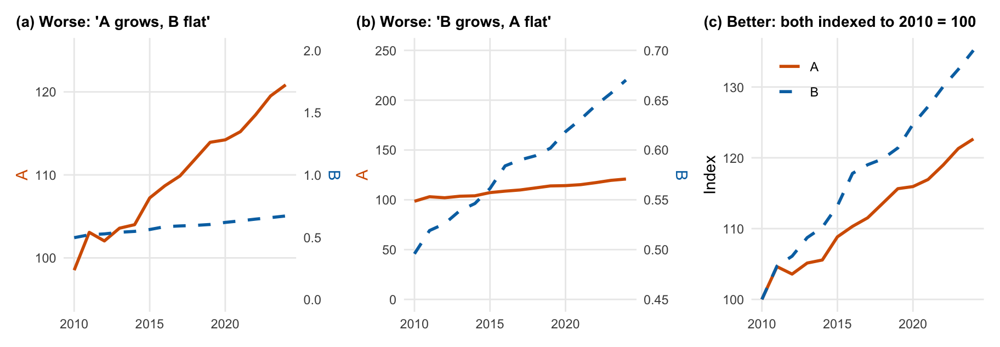
Figure B.16: Two simulated series. (a) and (b) are dual-axis charts of the identical data with different, equally ‘legitimate’ axis ranges: (a) suggests A rises and B is flat, (b) the opposite. (c) Indexing both series to 100 in 2010 shows what happened: B rose proportionally faster than A.
B.5 Choosing a graph: question first, then data type
There is no best graph for a data set, only better and worse graphs for a question. Start from the question, check the types of the variables involved, then choose from Table B.1. The “Prefer” options encode the key quantity by position or length and keep the data visible; the “care / avoid” options are explained in Section B.6. For one variable across a few groups, Table A.1 orders the same displays by how much information each discards.
Table B.1: A starting point for choosing a graph.
Question
Data
Prefer
Use with care / avoid
What values occur, and how often?
1 continuous
Histogram (try several bin widths), density curve, ECDF; dot or strip plot with a rug when n is small
Mean ± SD as a bar; a single bin width chosen by default
How common is each category?
1 categorical
Bar chart or Cleveland dot plot, sorted; horizontal if labels are long
Pie with many slices; 3-D bars
Do groups differ?
continuous × categorical
Small n: all points (strip chart or beeswarm) + mean or median; larger n: box plot or violin with points; many groups: sorted dot plot with intervals, or ridgelines
Bar + SE (“dynamite”) plots
Did each subject change?
paired / repeated
Slopegraph; plot of within-subject differences with CI
Two independent-looking box plots
How are two measurements related?
continuous × continuous
Scatterplot (open circles, transparency); add a smoother; 2-D bins or density for large n; scatterplot matrix for several variables
A correlation coefficient without the plot (Section A.4.1); lines joining unordered points
Do two methods agree?
paired continuous
Difference vs mean (Tukey’s sum–difference plot, called the Bland–Altman plot in medicine26 and the MA plot in genomics)
Scatterplot with r as evidence of agreement
How do two categorical variables relate?
categorical × categorical
Proportions with CIs per group (state the n); count heat map; mosaic plot (e.g. package ggmosaic)
Stacked bars with many segments; pies side by side
How does it change over time / along an ordered x?
ordered x
Line plot (points too if sparse); small multiples for many series; plot of differences; cycles aligned when data are periodic
Lines joining unordered categories; spiral/radial layouts; stacked area charts for comparing components
What fraction of the whole?
parts of one whole
A sorted bar chart of percentages, or a single stacked bar; a pie only for 2–3 parts
Many-slice pies; donuts; comparing several pies
How large are many estimates?
estimates + uncertainty
Dot-and-interval (“forest”) plot, sorted
Tables of p values; bars for estimates
What structure is in a large matrix?
many features × samples
Heat map with a perceptually uniform sequential palette, or a diverging one centred on a meaningful zero; rows and columns clustered or ordered
Rainbow/jet palettes; red–green palettes
Which elements do sets share?
set memberships
Euler/Venn diagrams for 2–3 sets; UpSet plots for more (R package UpSetR)27
Venn diagrams for 4+ sets
B.5.1 One data set, six questions
The data alone do not determine the display; the question does. Figure B.17 shows the same 342 flipper lengths of three penguin species (Adelie, Chinstrap and Gentoo; the two birds without a measurement are dropped) in six ways. Each panel is the best of the six for one question and poor for the others. Table B.2 names the six questions, and what each display shows and hides.
Table B.2: Six questions about one continuous variable in a few groups, and the display that answers each.
Panel
Question it answers
What it shows
What it hides
(a) Mean and SE bar
What is the average in each group, and how precisely is it estimated?
One mean per group and the standard error of that mean
The sample size, the spread, the shape and any outliers; the bar also suggests values running from zero to the mean
(b) Strip chart
How many observations are there, and where does each one fall?
Every value: sample size, gaps, ties and isolated points
The shape of the distribution once points overlap at larger n
(c) Box plot
How do the medians and the middle halves of the groups compare, and which values are extreme?
Median, quartiles, whiskers to the most extreme points within 1.5 interquartile ranges of the box, and points beyond
Sample size, the number of peaks, and gaps
(d) Violin with points
What shape does each distribution have: one peak or several, symmetric or skewed?
A smoothed density per group, mirrored, with the data on top
Fine structure, which depends on the smoothing bandwidth; the density can extend beyond the data at the tails
(e) Histograms on a common axis
Over what range do the values of each group lie, and where do the groups overlap?
Counts per bin, with the groups aligned on one x-axis
Position within a bin; the shape depends on the bin width and the bin origin (Figure B.18)
(f) Empirical cumulative distribution function (ECDF)
What fraction of each group lies below a given value, and is one group shifted relative to another by the same amount at every quantile?
Every quantile of every group, with no binning or smoothing
Peaks and density, which are read only from the slope of the curve; the display is less familiar to most readers
Show code
yl <-"Flipper length (mm)"v1 <-ggplot(fls, aes(species, m)) +geom_col(width =0.55, fill ="grey60") +geom_errorbar(aes(ymin = m, ymax = m + se), width =0.15) +labs(title ="(a) Mean + SE: the average", x =NULL, y = yl)v2 <-ggplot(fl, aes(species, flipper_length_mm)) +geom_point(position =jit(0.25), size =0.6, alpha =0.6) +labs(title ="(b) Strip chart: every observation", x =NULL, y = yl)v3 <-ggplot(fl, aes(species, flipper_length_mm)) +geom_boxplot(width =0.5, outlier.shape =1) +labs(title ="(c) Box plot: medians, quartiles", x =NULL, y = yl)v4 <-ggplot(fl, aes(species, flipper_length_mm)) +geom_violin(fill ="grey88", colour =NA) +geom_point(position =jit(0.15), size =0.5, alpha =0.6) +labs(title ="(d) Violin + points: shape", x =NULL, y = yl)v5 <-ggplot(fl, aes(flipper_length_mm)) +geom_histogram(binwidth =2, fill ="grey45", colour ="white", boundary =0.5) +facet_wrap(~ species, ncol =1) +labs(title ="(e) Histograms: range, overlap", x = yl, y ="Count")v6 <-ggplot(fl, aes(flipper_length_mm, colour = species)) +stat_ecdf(linewidth =0.8) +scale_colour_manual(values = oi[c(1, 4, 3)], name =NULL) +labs(title ="(f) ECDF: quantiles, shifts", x = yl, y ="Cumulative proportion") +theme(legend.position ="inside", legend.position.inside =c(0.2, 0.8))(v1 | v2 | v3) / (v4 | v5 | v6)
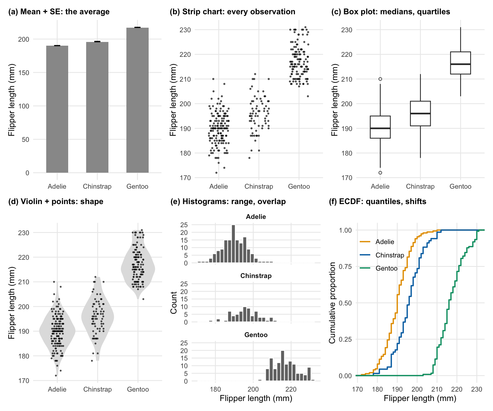
Figure B.17: Flipper length of three penguin species (R package palmerpenguins), shown six ways. Each panel answers a different question; the questions are listed in the table above. The bar chart answers the fewest: it reduces each species to one number and an error bar.
Panel (a) answers its question and no other: mean flipper length is 190.0 mm in Adelie, 195.8 mm in Chinstrap and 217.2 mm in Gentoo penguins, each with a standard error below 1 mm. The other five panels each add information that (a) does not contain.
(b) Sample size and resolution. The species are unequally represented (151, 68 and 123 birds), which the bar chart does not show, and lengths are recorded to the whole millimetre, so many birds share a value. That is why the strip chart is jittered sideways.
(c) Location and spread. The medians are 190, 196 and 216 mm. The middle halves of the Adelie and Chinstrap distributions overlap (186–195 and 191–201 mm), while the Gentoo middle half (212–221 mm) lies above both.
(d) Shape. Adelie and Chinstrap each have a single peak and a roughly symmetric distribution. The Gentoo distribution is broader and flat-topped, with a small cluster of values near 230 mm that the strip chart and the histogram also show. One display cannot settle whether that is structure or noise. A flat top is what a mixture of two groups with different means produces: within each species, males have flippers longer than females by 5 to 9 mm on average, the largest difference being in Gentoo. No panel here can show this directly, because sex is not mapped to any channel (Figure B.5 maps it).
(e) Range and overlap. The ranges are 172–210, 178–212 and 203–231 mm. Only 7% of Adelie and Chinstrap birds reach the shortest Gentoo flipper, and 74% of Gentoo birds exceed the longest flipper of the other two species.
(f) Quantiles and shift. The Chinstrap curve lies to the right of the Adelie curve by 5 to 7 mm at the 10th, 25th, 50th, 75th and 90th percentiles, so the difference between these two species is close to a constant shift. A randomly chosen Chinstrap has a longer flipper than a randomly chosen Adelie in 73% of pairs (ties counted as half). Gentoo is shifted a further 20 to 23 mm.
These are descriptions: species is not an intervention, and nothing here is a causal contrast. When the question is a contrast between two groups, the display that answers it is the difference itself with its interval (Section B.3.2).
B.5.2 Histograms depend on their bins
A histogram is itself a model: the bin width trades detail against noise. Always try several.
Show code
hb <-function(bw, ttl) ggplot(faithful, aes(waiting)) +geom_histogram(binwidth = bw, fill ="grey45", colour ="white", boundary =0) +geom_rug(alpha =0.3, length =unit(0.03, "npc")) +labs(title = ttl, x ="Waiting time (min)", y ="Count")hb(1, "Bin width 1 min: noise") +hb(4, "Bin width 4 min") +hb(15, "Bin width 15 min: too coarse")
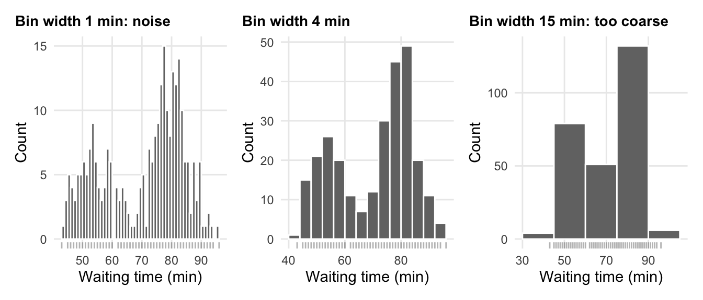
Figure B.18: Waiting time between eruptions of the Old Faithful geyser (R dataset faithful, n = 272), with a rug of the raw values along the bottom. Bins that are too narrow (left) show mostly noise; bins that are too wide (right) hide the two clusters that the middle panel shows clearly.
B.5.3 Large data: overplotting
Show code
dm <- ggplot2::diamondso1 <-ggplot(dm, aes(carat, price)) +geom_point() +labs(title ="Worse: overplotted", x ="Carat", y ="Price (USD)")o2 <-ggplot(dm, aes(carat, price)) +geom_point(size =0.3, alpha =0.03) +scale_x_log10() +scale_y_log10() +labs(title ="Better: transparency, log scales", x ="Carat (log)", y ="Price (log)")o3 <-ggplot(dm, aes(carat, price)) +geom_bin_2d(bins =40) +scale_x_log10() +scale_y_log10() +scale_fill_viridis_c(transform ="log10", name ="Count") +labs(title ="Better: 2-D bins", x ="Carat (log)", y ="Price (log)")o1 + o2 + o3
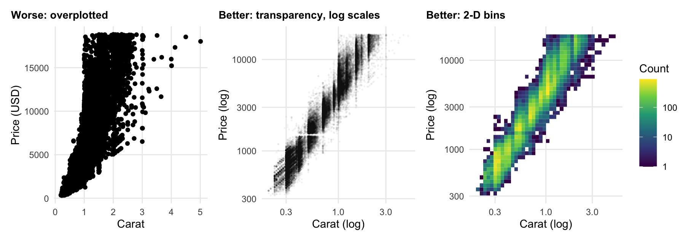
Figure B.19: Price against weight for 53,940 diamonds (ggplot2::diamonds). Left: solid points saturate into a black mass. Middle: small, transparent points on log scales show density and the multiplicative relationship. Right: two-dimensional bins count the points per cell (square bins with geom_bin_2d(); geom_hex() draws hexagons and needs the hexbin package).
B.5.4 Two categorical variables: counts or proportions?
Show code
tit <-as.data.frame(Titanic) |>group_by(Class, Survived) |>summarise(n =sum(Freq), .groups ="drop")tp <- tit |>group_by(Class) |>summarise(yes = n[Survived =="Yes"], N =sum(n), .groups ="drop") |>rowwise() |>mutate(p = yes / N, lo =prop.test(yes, N)$conf.int[1], hi =prop.test(yes, N)$conf.int[2]) |>ungroup()t1 <-ggplot(tit, aes(Class, n, fill = Survived)) +geom_col(width =0.6) +scale_fill_manual(values =c(No ="grey75", Yes = oi[4])) +labs(title ="Counts: how many?", x =NULL, y ="People") +theme(legend.position ="inside", legend.position.inside =c(0.15, 0.8))t2 <-ggplot(tp, aes(p, reorder(Class, p))) +geom_pointrange(aes(xmin = lo, xmax = hi), colour = oi[4]) +geom_text(aes(x = hi, label =paste0("n = ", N)), hjust =-0.2, size =3.2,colour ="grey30") +scale_x_continuous(labels = scales::label_percent(), limits =c(0, 0.85)) +labs(title ="Proportions: did survival differ?", x ="Survived (95% CI)", y =NULL)t1 + t2
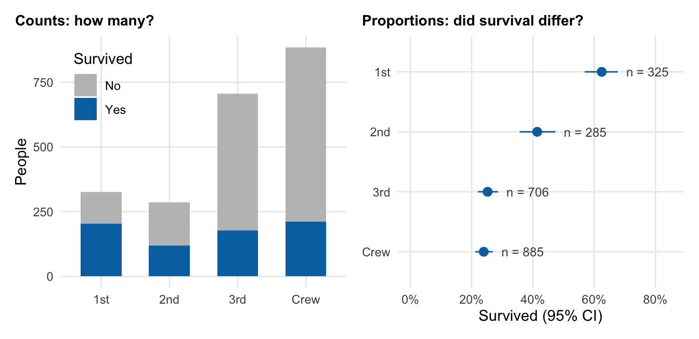
Figure B.20: Passengers and crew of the Titanic by class and survival (R dataset Titanic, summed over sex and age). Left: stacked counts answer ‘how many people were in each class and how many survived?’ but make survival rates hard to compare, because each rate is the ratio of the coloured segment to a whole bar, and the bars differ in height. Right: the proportion surviving in each class with 95% CIs and the group size answers ‘did survival differ by class?’ directly.
B.6 Graphs to avoid, and what to use instead
Table B.3: Common offenders.
Graph
Why it misleads
Use instead
Pie / donut with many or similar slices; several pies compared
Angles and areas are judged less accurately than positions; comparing slices that point in different directions, or the same category across pies, is hard
Sorted bar or dot chart; lines or slopegraph across groups
Dynamite plot (bar = mean, whisker = SE)
Hides n, distribution and outliers; within-the-bar bias; SE often mistaken for spread
Points + mean + labelled CI; box or violin with points
Truncated bar chart
Bar length no longer proportional to value; large Lie Factor
Bars from zero, or dots (position) with a range chosen to fit the data
3-D bars, pies, perspective
Adds no data; perspective changes apparent size; bars are read against the wrong baseline
2-D version
Area / bubble / proportional symbols for precise values
Area judged less accurately; perceived area grows more slowly than true area; radius scaling squares the effect
Bars or dots
Dual y-axes
Relative position and slope of the two series are arbitrary choices of the designer
Two aligned panels, or index to a common baseline
Rainbow / jet colour scales
Lightness not monotonic: false boundaries, hidden gradients; fails for colour-vision deficiency
viridis, cividis; diverging palettes with a neutral centre
Red vs green as the key contrast
Hard to tell apart for about 8% of men of European descent28
Blue vs orange/vermillion; vary lightness; add shape
Stacked bars / areas with many segments
Only the bottom segment has a common baseline
Small multiples, dodged bars or lines
Lines connecting unordered categories
Imply a continuum and intermediate values that do not exist
Dots
Straight line through a curved association
Asserts a functional form the data do not have
A smoother (loess or spline), or the fitted model’s curve
Spiral / radial time series
Compress the y-axis and give radius no meaning; cycles hard to compare
Line plot; cycles aligned or faceted
Venn diagrams for 4+ sets
Regions are unreadable and areas not proportional
UpSet plot
Unlabelled error bars
SD, SE and CI differ several-fold
Say what the bars are, and n
Hidden scale breaks
Lengths across the break mean nothing
Log scale, or a clearly marked break with separate panels
Evidence: the case against pies is weaker than its reputation
For comparing two values, position (bars) was about twice as accurate as angle (pies) in Cleveland and McGill’s experiment.29
For judging a part as a fraction of the whole, Spence and Lewandowsky found little to choose between pies and bars, with a slight advantage for pies when the judgment combined several parts; both were better than tables.30
People may not read pies by angle at all: in one experiment, charts showing only the angle were read least accurately, while arc length and area carried more of the information.31
The crowdsourced replication of Cleveland and McGill did not find angle judgments worse than length judgments.32
Bottom line. A pie is defensible for a single part-to-whole split with two or three parts. It fails when slices are similar, numerous, or must be compared across several pies (Figure B.21), which is what most pies in practice are asked to do.
Show code
shr <-tibble(product =rep(LETTERS[1:5], 3), year =rep(c(2020, 2022, 2024), each =5),share =c(30, 25, 20, 15, 10, 27, 26, 21, 16, 10, 24, 27, 22, 16, 11))pp <-ggplot(shr, aes(x ="", y = share, fill = product)) +geom_col(width =1, colour ="white") +coord_polar(theta ="y") +facet_wrap(~ year, nrow =1) +scale_fill_manual(values = oi[1:5], name =NULL) +labs(title ="Worse: one pie per year") +theme_void() +theme(plot.title =element_text(face ="bold", size =10.5),strip.text =element_text(face ="bold"))pl2 <-ggplot(shr, aes(year, share, colour = product)) +geom_line(linewidth =0.9) +geom_point(size =1.6) +geom_text(data =filter(shr, year ==2024), aes(label = product),hjust =-0.6, fontface ="bold", show.legend =FALSE) +scale_colour_manual(values = oi[1:5], guide ="none") +scale_x_continuous(breaks =c(2020, 2022, 2024), limits =c(2019.8, 2024.6)) +labs(title ="Better: shares over time", x =NULL, y ="Share (%)")pp + pl2 +plot_layout(widths =c(1.6, 1))
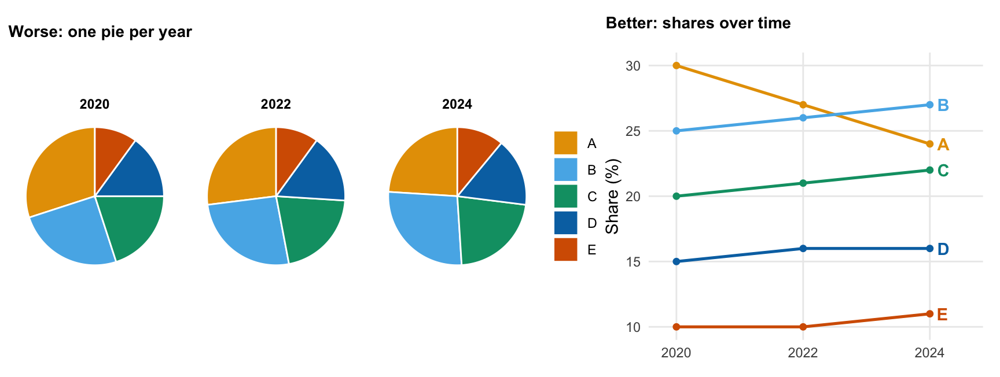
Figure B.21: Simulated market shares of five products in three years. Question: did product B overtake A, and when? The pies make the comparison across years difficult; the line chart makes it immediate.
B.7 Tufte’s principles, read critically
Edward Tufte’s The Visual Display of Quantitative Information gave graphics a vocabulary that is still useful.33 Graphical excellence, in his words, gives the viewer “the greatest number of ideas in the shortest time with the least ink in the smallest space”, and it requires telling the truth about the data. Graphical displays should, among other things:
show the data;
make the viewer think about the substance rather than the design;
avoid distorting what the data have to say;
encourage the eye to compare different pieces of data;
reveal the data at several levels of detail, from overview to fine structure;
be closely integrated with the statistical and verbal description of the data.
Three of his tools are used most:
Lie Factor (Section B.4.1): the graphic’s effect size divided by the data’s.
Data-ink ratio: the share of the ink that encodes data. Maximise it: erase non-data ink (heavy frames, dense grids, shading, 3-D effects), erase redundant data ink, then revise and edit.
Chartjunk: decoration that does not inform, such as moiré hatching, heavy grids and pictorial ornament.
He also promoted small multiples (Figure B.10) and, later, word-sized “sparklines”.
Evidence: where Tufte is right and where the data-ink rule goes too far
Removing non-data clutter is sound. Heavy grids, frames and shading compete with the data for attention; a light grid or none is usually better. (This is a design argument rather than a tested finding: a dense grid also signals to the reader that small differences matter.)
Removing redundant data ink can hurt. Encoding the same grouping with both colour and shape helps people separate groups.34 Direct labels and reference lines are “non-data ink” that reduce memory load.
Minimalism is not what readers prefer. In one study, students clearly preferred a conventional bar chart to a minimalist, Tufte-style version;35 this measured preference, not accuracy.
Embellishment is not always junk. In a small study (n = 20), heavily illustrated charts showed no detectable loss of accuracy and were remembered better two to three weeks later than plain ones.36 Unusual and pictorial charts are more memorable.37 Memorability is not understanding, but it has some value in teaching and outreach.
The working rule: judge each element of a graph by whether it helps the reader make the intended comparison accurately, not by how much ink it uses.
Figure B.22: Growth of five orange trees (R dataset Orange). Left: a heavy frame, dense grid, three redundant encodings of ‘tree’ (colour, line type, symbol) and a legend far from the lines. Right: a light grid, one encoding, direct labels at the line ends. The right panel uses less ink, but its labels are ‘non-data ink’ that are worth including.
B.8 Graphs in exploration
The exploratory appendix, Appendix A, covers screening data for illegal values and missingness, plotting distributions and co-variation, looking for order and batch effects, and what an interval means once the data have been inspected. Its figures on Anscombe’s quartet and the Datasaurus dozen (Figure A.3), on Simpson’s paradox in the cohort (Section A.4.1), and its line-up (Figure A.12) are not repeated here. The point this appendix adds is that the graph used to find a pattern is itself one of the possible explanations of the pattern.
B.8.1 Interrogate every pattern
A pattern found by looking at graphs is a hypothesis, not a result. Before it is reported, the alternatives below should be ruled out:
Chance. Would data with no effect produce something similar? Permute the labels or simulate from a null model, and plot the result in the same way as the real data: the line-up protocol (Section A.9).
The graph. Does the pattern survive a different scale, bin width, smoother span, aspect ratio or ordering? Figure B.18, Figure B.9 and Figure B.13 show each of these creating or hiding a feature.
Measurement and processing. Batch effects, normalisation, detection limits, sentinel values, plate position (Section A.2 and Section A.5).
Selection. Who or what is missing, filtered out or lost to follow-up (Section A.2.4)? Removing low-count genes, for example, changes the shape of an MA plot.
A third variable. Subgroups and confounders (Section A.4.1, Chapter 12). An association in a graph is not, by itself, evidence of causation.
Forking paths. The more graphs are made, the more patterns will be found by chance. A pattern found by searching needs confirmation in new data or in a pre-specified analysis (Section A.9).
B.8.2 A published example
Troller-Renfree and colleagues randomised 1,000 low-income mothers to receive $333 or $20 per month and recorded infant EEG at about one year of age in 435 infants (184 in the high-cash group, 251 in the low-cash group); in-person data collection stopped at the start of the COVID-19 pandemic.38 In their covariate-adjusted models, absolute beta and gamma power were higher in the high-cash group (p = 0.02 and 0.04), but not after the preregistered Westfall–Young adjustment for multiple comparisons (p = 0.07 and 0.12), as the authors state; two exploratory, region-specific effects remained below 0.05 after adjustment. One of their figures showed the two group-mean spectra. Because power had been standardised against the pooled sample, the authors note that the two lines are mirror images of one another, so the figure displays one difference twice; they describe it as illustrative only.
Gelman re-plotted the published data: first all 435 individual spectra, then the group averages.39 The individual curves of the two groups overlap almost entirely. When he permuted the treatment labels, the resulting group differences looked much like the real one. His conclusion was neither that there was an effect nor that there was none, but that “the data are too noisy to learn anything useful” about it, and he noted that a pre-treatment EEG measurement, had one been possible in newborns, would have made the comparison much more precise by removing between-child variation.
The graphical lessons: show individuals as well as means; show a difference once, with its uncertainty; and compare the real pattern with patterns produced by permuted data.
B.9 Checklist before a figure leaves your hands
What is the one comparison this figure must make easy? Is it made within a panel, between adjacent elements, along a common aligned scale?
Are the key quantities encoded by position or length, not angle, area or colour?
Are the raw data visible (or their distribution summarised), and is n stated?
Is every error bar defined (SD, SE or CI), and does the graph show the variation relevant to the effect size, not only precision?
Lie Factor ≈ 1? Bars start at zero; no hidden breaks; area scaled by area; no 3-D.
Is the scale right for the process (log for multiplicative effects), labelled in original units, with units in the axis title?
Do panels meant for comparison share axes? If not, does the caption say so?
Are categories ordered by something meaningful?
Colour: at most 6–8 hues, safe for colour-vision deficiency, readable in greyscale, redundantly encoded where it carries the message; perceptually uniform for quantities; no rainbow.
Labels placed directly where possible; legends close to the data.
Aspect ratio checked if slopes or shapes matter.
Salience matches relevance: the most conspicuous element is the most important one.
No dual axes (other than fixed transformations of one scale), no pies with many slices, no dynamite plots.
Caption stands alone: what is plotted, n, what the bars mean, data source, and any transformation.
Sceptical-reader test: would a sceptical reader, given the raw data, draw the same picture?
B.10 Exercises
Re-order. Take Figure B.8 and re-draw the alphabetical bar chart as a dot plot sorted by a different variable from state.x77 (e.g. illiteracy). What does the comparison between the two orderings suggest? Is that a causal claim?
Find the Lie Factor. Find a figure in a recent paper in your field that uses truncated bars, area encoding or a dual axis. Compute its Lie Factor and re-draw it.
Six questions. For a continuous outcome in your own data, make the six views of Figure B.17 and fill in Table B.2 for your data. Which features does each view show or hide? Which would you publish, and for which question?
Pairing. Simulate paired data in which the treatment effect is small relative to between-subject variation. Show it as in Figure B.7 (a) and (c). Compute both the paired and unpaired CIs.
Scales. Re-draw Figure B.12 with a log2 axis labelled 1, 2, 4, 8, …. How is a growth rate read off it?
Colour. Re-draw Figure B.4 with scale_fill_distiller(palette = "RdYlGn") and simulate how it looks with deuteranopia (colorspace::deutan()). What happens to the boundaries?
Line-up your own pattern. Take a group difference you believe in, permute the labels 19 times as in Figure A.12, and ask a colleague to find the real plot.
Case study. In the EEG study of Section B.8.2, how would a pre-treatment measurement have changed (a) the graph you would draw and (b) the precision of the estimated effect?
Further reading
Cleveland, The Elements of Graphing Data: the source for much of the perceptual reasoning in this appendix.40
Tufte, The Visual Display of Quantitative Information.41
Wickham, Çetinkaya-Rundel and Grolemund, R for Data Science, 2nd ed., the chapters on visualisation and exploratory analysis.42
Vanderplas, Cook and Hofmann: a review of experiments that test statistical graphics.43
Weissgerber and colleagues: the case against bar graphs of continuous data.44
Wilkinson L, The Grammar of Graphics, 2nd ed., New York: Springer, 2005 (DOI); Wickham H, “A Layered Grammar of Graphics,” J Comput Graph Stat 2010;19:3-28 (DOI).↩︎
Cleveland WS, McGill R, “Graphical Perception: Theory, Experimentation, and Application to the Development of Graphical Methods,” J Am Stat Assoc 1984;79:531-554 (DOI).↩︎
Heer J, Bostock M, “Crowdsourcing graphical perception: using Mechanical Turk to assess visualization design,” Proc SIGCHI Conf Hum Factors Comput Syst 2010:203-212 (DOI).↩︎
Cleveland WS, The Elements of Graphing Data, revised ed., Summit, NJ: Hobart Press, 1994.↩︎
Stevens SS, “On the psychophysical law,” Psychol Rev 1957;64:153-181 (DOI).↩︎
Cleveland WS, McGill R, “Graphical Perception: Theory, Experimentation, and Application to the Development of Graphical Methods,” J Am Stat Assoc 1984;79:531-554 (DOI).↩︎
Treisman AM, Gelade G, “A feature-integration theory of attention,” Cogn Psychol 1980;12:97-136 (DOI).↩︎
Nothelfer C, Gleicher M, Franconeri S, “Redundant encoding strengthens segmentation and grouping in visual displays of data,” J Exp Psychol Hum Percept Perform 2017;43:1667-1676 (DOI).↩︎
Luck SJ, Vogel EK, “The capacity of visual working memory for features and conjunctions,” Nature 1997;390:279-281 (DOI).↩︎
Borland D, Taylor RM II, “Rainbow Color Map (Still) Considered Harmful,” IEEE Comput Graph Appl 2007;27:14-17 (DOI); Crameri F, Shephard GE, Heron PJ, “The misuse of colour in science communication,” Nat Commun 2020;11:5444 (DOI).↩︎
Nuñez JR, Anderton CR, Renslow RS, “Optimizing colormaps with consideration for color vision deficiency to enable accurate interpretation of scientific data,” PLoS One 2018;13:e0199239 (DOI).↩︎
Birch J, “Worldwide prevalence of red-green color deficiency,” J Opt Soc Am A Opt Image Sci Vis 2012;29:313-320 (DOI).↩︎
Gleicher M, Albers D, Walker R, Jusufi I, Hansen CD, Roberts JC, “Visual comparison for information visualization,” Inf Vis 2011;10:289-309 (DOI).↩︎
Cleveland WS, McGill R, “Graphical Perception: Theory, Experimentation, and Application to the Development of Graphical Methods,” J Am Stat Assoc 1984;79:531-554 (DOI).↩︎
Tufte ER, The Visual Display of Quantitative Information, 2nd ed., Cheshire, CT: Graphics Press, 2001.↩︎
Correll M, Bertini E, Franconeri S, “Truncating the Y-Axis: Threat or Menace?” Proc 2020 CHI Conf Hum Factors Comput Syst 2020:1-12 (DOI).↩︎
Cleveland WS, McGill ME, McGill R, “The Shape Parameter of a Two-Variable Graph,” J Am Stat Assoc 1988;83:289-300 (DOI).↩︎
Talbot J, Gerth J, Hanrahan P, “An Empirical Model of Slope Ratio Comparisons,” IEEE Trans Vis Comput Graph 2012;18:2613-2620 (DOI).↩︎
Weissgerber TL, Milic NM, Winham SJ, Garovic VD, “Beyond Bar and Line Graphs: Time for a New Data Presentation Paradigm,” PLoS Biol 2015;13:e1002128 (DOI).↩︎
Newman GE, Scholl BJ, “Bar Graphs Depicting Averages Are Perceptually Misinterpreted: The Within-the-Bar Bias,” Psychon Bull Rev 2012;19:601-607 (DOI).↩︎
Correll M, Gleicher M, “Error Bars Considered Harmful: Exploring Alternate Encodings for Mean and Error,” IEEE Trans Vis Comput Graph 2014;20:2142-2151 (DOI).↩︎
Belia S, Fidler F, Williams J, Cumming G, “Researchers Misunderstand Confidence Intervals and Standard Error Bars,” Psychol Methods 2005;10:389-396 (DOI).↩︎
Hofman JM, Goldstein DG, Hullman J, “How Visualizing Inferential Uncertainty Can Mislead Readers About Treatment Effects in Scientific Results,” Proc 2020 CHI Conf Hum Factors Comput Syst 2020:1-12 (DOI).↩︎
Cumming G, Finch S, “Inference by Eye: Confidence Intervals and How to Read Pictures of Data,” Am Psychol 2005;60:170-180 (DOI).↩︎
Ho J, Tumkaya T, Aryal S, Choi H, Claridge-Chang A, “Moving beyond P values: data analysis with estimation graphics,” Nat Methods 2019;16:565-566 (DOI).↩︎
Bland JM, Altman DG, “Statistical methods for assessing agreement between two methods of clinical measurement,” Lancet 1986;1:307-310 (DOI).↩︎
Lex A, Gehlenborg N, Strobelt H, Vuillemot R, Pfister H, “UpSet: Visualization of Intersecting Sets,” IEEE Trans Vis Comput Graph 2014;20:1983-1992 (DOI).↩︎
Birch J, “Worldwide prevalence of red-green color deficiency,” J Opt Soc Am A Opt Image Sci Vis 2012;29:313-320 (DOI).↩︎
Cleveland WS, McGill R, “Graphical Perception: Theory, Experimentation, and Application to the Development of Graphical Methods,” J Am Stat Assoc 1984;79:531-554 (DOI).↩︎
Spence I, Lewandowsky S, “Displaying proportions and percentages,” Appl Cogn Psychol 1991;5:61-77 (DOI).↩︎
Skau D, Kosara R, “Arcs, Angles, or Areas: Individual Data Encodings in Pie and Donut Charts,” Comput Graph Forum 2016;35:121-130 (DOI).↩︎
Heer J, Bostock M, “Crowdsourcing graphical perception: using Mechanical Turk to assess visualization design,” Proc SIGCHI Conf Hum Factors Comput Syst 2010:203-212 (DOI).↩︎
Tufte ER, The Visual Display of Quantitative Information, 2nd ed., Cheshire, CT: Graphics Press, 2001.↩︎
Nothelfer C, Gleicher M, Franconeri S, “Redundant encoding strengthens segmentation and grouping in visual displays of data,” J Exp Psychol Hum Percept Perform 2017;43:1667-1676 (DOI).↩︎
Inbar O, Tractinsky N, Meyer J, “Minimalism in information visualization: attitudes towards maximizing the data-ink ratio,” Proc 14th Eur Conf Cogn Ergon (ECCE 2007) 2007:185-188 (DOI).↩︎
Bateman S, Mandryk RL, Gutwin C, Genest A, McDine D, Brooks C, “Useful junk? The effects of visual embellishment on comprehension and memorability of charts,” Proc SIGCHI Conf Hum Factors Comput Syst 2010:2573-2582 (DOI).↩︎
Borkin MA, Vo AA, Bylinskii Z, Isola P, Sunkavalli S, Oliva A, Pfister H, “What Makes a Visualization Memorable?” IEEE Trans Vis Comput Graph 2013;19:2306-2315 (DOI).↩︎
Troller-Renfree SV, Costanzo MA, Duncan GJ, Magnuson K, Gennetian LA, Yoshikawa H, Halpern-Meekin S, Fox NA, Noble KG, “The impact of a poverty reduction intervention on infant brain activity,” Proc Natl Acad Sci U S A 2022;119:e2115649119 (DOI).↩︎
Cleveland WS, The Elements of Graphing Data, revised ed., Summit, NJ: Hobart Press, 1994.↩︎
Tufte ER, The Visual Display of Quantitative Information, 2nd ed., Cheshire, CT: Graphics Press, 2001.↩︎
Wickham H, Çetinkaya-Rundel M, Grolemund G, R for Data Science, 2nd ed., Sebastopol, CA: O’Reilly Media, 2023 (https://r4ds.hadley.nz).↩︎
Vanderplas S, Cook D, Hofmann H, “Testing Statistical Charts: What Makes a Good Graph?” Annu Rev Stat Appl 2020;7:61-88 (DOI).↩︎
Weissgerber TL, Milic NM, Winham SJ, Garovic VD, “Beyond Bar and Line Graphs: Time for a New Data Presentation Paradigm,” PLoS Biol 2015;13:e1002128 (DOI).↩︎